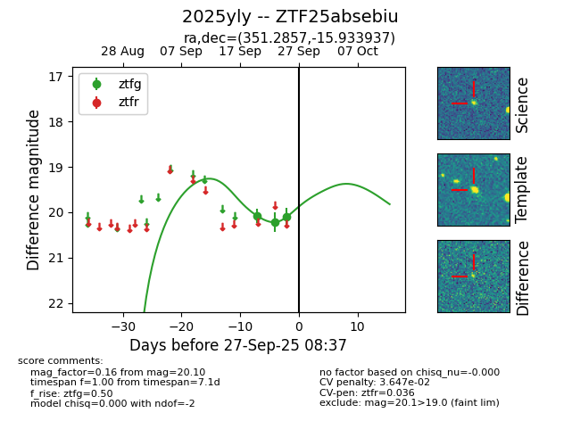
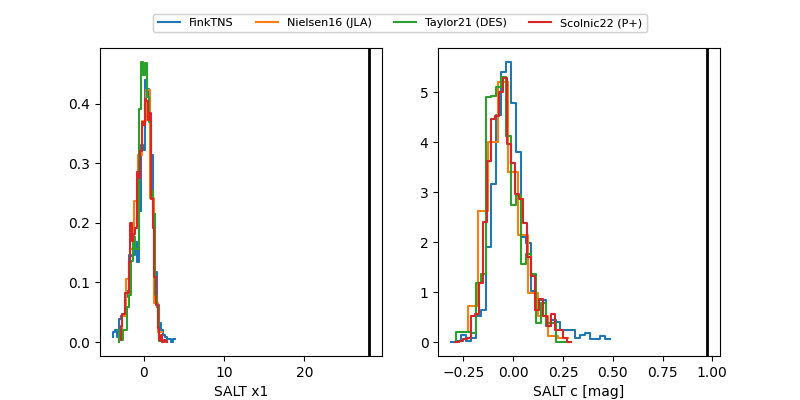

FINK: ZTF25absebiu
Lasair: ZTF25absebiu
ALeRCE: ZTF25absebiu
TNS: 2025yly
YSE: 2025yly
ZTF25absebiu (ztf,fink)
2025yly (tns,yse)
equatorial (ra, dec) = (351.2857,-15.93394)
galactic (l, b) = (57.7383,-67.07592)


last ztfg=20.10
3 ztfg detections